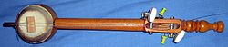

The tumbi or toombi is a traditional North Indian musical instrument from
Punjab. The high pitched, single string plucking instrument is associated with
folk music of Punjab and presently very popular in Western Bhangra music.
The tumbi was popularized in the modern era by the Punjabi folksinger Lal Chand
Yamla Jatt (1914-1991). In the 1960s, 1970s and 1980s most of the Punjabi
singers used the tumbi, such as Kuldeep Manak, Mohammed Sadiq, Didar Sandhu,
Amar Singh Chamkila and Kartar Ramla.
Design:

The instrument is made of a wooden stick mounted with a gourd shell resonator. A
single metallic string is passed on a resonator over a bridge and tied to the
key at the end of the stick. The string is struck with the continuous flick and
retraction of the first finger
Use in Western music:
Get Ur Freak On, a 2001 hit single by Missy Elliott produced by Timbaland, saw
the introduction of the distinct tumbi sound into the popular mainstream music
scene.
Mundian Ton Bach Ke Rahin (Beware of Boys) from Panjabi MC, a huge hit in the UK
charts, is perhaps the most widely known example of the use of tumbi in popular
Western music.
20 Inch by Master P (featuring Jamaican reggae artist Cutty Ranks and rap artist
Kobra Khan) included tumbi played by Toronto, Ontario, Canadian native Shawn
Ramta (grandson of the famous Punjabi folk singer, Hazara Singh Ramta).
Players:
Lal Chand Yamla Jatt
Mohammed Sadiq
Kuldeep Manak
Didar Sandhu
Amar Singh Chamkila (father of chamkila).
Manmohan Waris
Sarbjit Cheema
Sukshinder Shinda
Sukhwinder Panchhi
Saeen Zahoor
Sangtar